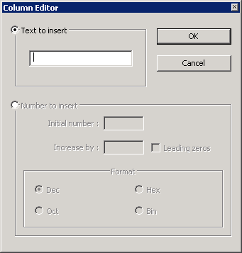

A special way of editing files is column mode editing. This means that text can be selected in columns, rather than rows (effectively meaning 'vertical editing'). The column editing support is done via Scintilla, but with a few supplements of Notepad++. To initiate a Column mode selection, depress the Alt key (default) when selecting text (using mouse or cursor keys), moving the cursor downwards or upwards as needed. This works best if a non-proportional (monospaced) font is used, because then each character will be aligned with the ones above and below it (refer to Styler Configurator for more information).
When text is selected in this so called rectangilar mode, typing will change each selected column of characters into the typed character, or insert such a column. Use the ESC key to exit this special typing mode. To back up one column, use the feature, instead of the Backspace key.

The Column Editor dialog is designed to make working with columns easier. It can be opened by selecting .
There are two types of insertions that the column editor supports, regular text or number sequences.